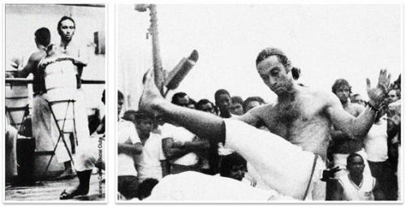

Mestre Peixinho (Centro Cultural Senzala de Capoeira)
По неофициальному расписанию Capoeira.in, по вторникам мы публикуем биографии мастеров капоэйры. 16 мая 2011 года, в 4 часа утра ушел из жизни Mestre Peixinho, один из основателей группы «Centro Cultural Senzala de Capoeira», или коротко Grupo Senzala. Так получилось, что ровно год назад краткая биография и видео этого местре были опубликованы мной в рамках «Каподайджеста» (№2, 22.05).

К годовщине со дня смерти местре Peixinho на сайте Abeiramar.tv появилось видео — Homenagem a Mestre Peixinho:
Еще одно видео из передачи с местре Toni Vargas: Iê Viva Meu Mestre - Retalhos de Mestre Toni Vargas (с английскими субтитрами)
Ссылки:
— Краткая биография местре Peixinho (рус.)
— Биография на португальском
— История группы Senzala (рус.)